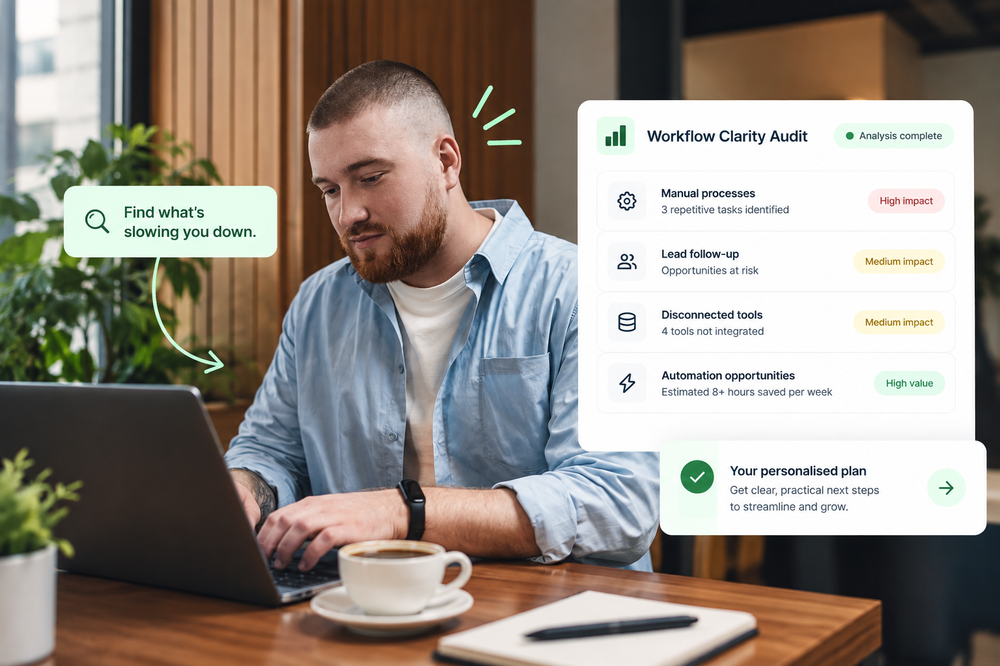

01€49
Lead capture · Best for inbound enquiries
Website Lead Capture & Follow-Up
Turn form fills into a faster first response without manually moving data between tools.
View automation →Workflow systems for growing businesses
You’ve saved the tutorials, watched the demos, maybe even asked ChatGPT where to start. Let’s turn that good intention into a system that works this week.
Free workflow audit · No pressure · Clear next steps
Built around the tools you already use
Less chasing. More momentum.
You need to know what makes sense for your business. We identify the first workflow worth fixing, so you can stop experimenting and start moving.
That clarity adds up: in a 2023 study of more than 9,600 knowledge workers, people estimated that improved processes could save them 4.9 hours every week. Read the Asana research ↗
Take the free audit →
Ready-to-use automations
Choose a proven system, adapt it to your tools, and stop manual work from slowing you down.
Explore all automations →Lead capture · Best for inbound enquiries
Turn form fills into a faster first response without manually moving data between tools.
View automation →Booking · Best for calls and appointments
Let people book, get prepared and stay informed without the back-and-forth.
View automation →Follow-up · Best for warm leads
Keep conversations moving while you focus on the work that needs you most.
View automation →Need something tailored?
Our personalised audit shows you what is quietly wasting time, where opportunities are being lost and which workflow deserves attention now.
Your next 10 minutes
Answer a few simple questions and get clear on what to streamline, automate or hand off first.
Start my free workflow audit →Private and practical. No technical knowledge needed.Good questions, clear answers
Everything you need to know before you take the first step.
It’s a short, founder-friendly diagnostic that helps identify the workflows costing you time, energy and missed opportunities—then points you towards a practical next step.
No. The audit is built for business owners who want better systems, whether you use a full tech stack or mostly work from a notebook and inbox.
Only if it earns its place. The goal is to simplify the way work moves through your business, not add another subscription to manage.
Yes. Once you know what matters most, you can use a practical action plan or bring the system to life with done-for-you support.